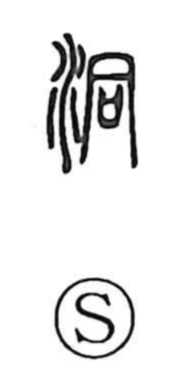

洞

Uncategorized
Kun: hora, uro | On: dou
cave ・ hollow ・ to penetrate ・ to pass through ・ deep
Explanation
This is a phono-semantic character with the water element and the phonetic 同 (dou). Shirakawa explains that 同 originally depicted a tubular wine vessel and thus conveyed the idea of a tube-like form. While the Shuowen glossed the character as describing swiftly flowing water, he sees the older sense as “cave” or “hollow,” a tubular cavity often carved by the force of water and therefore deep. From this image of a cave or den, the character naturally extends to meanings such as to pass through, to penetrate, and deep.